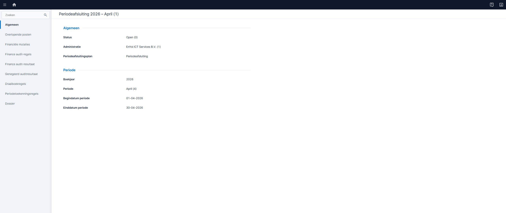
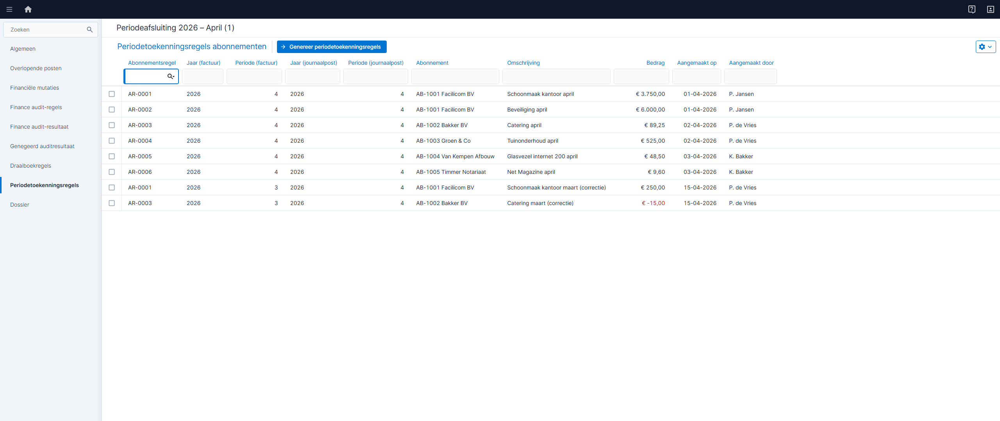
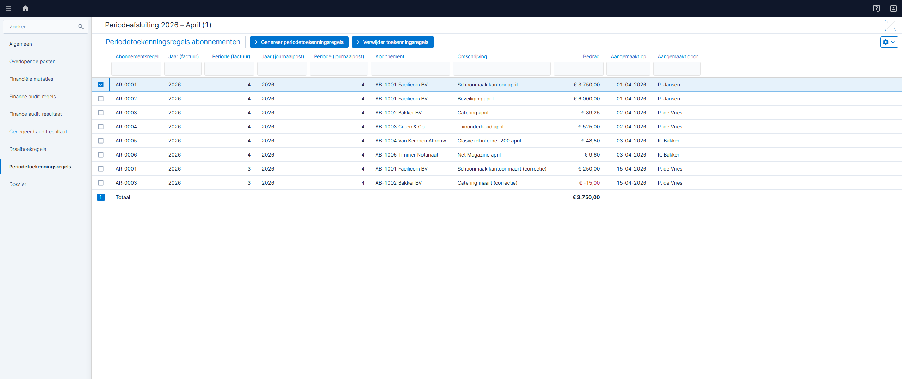
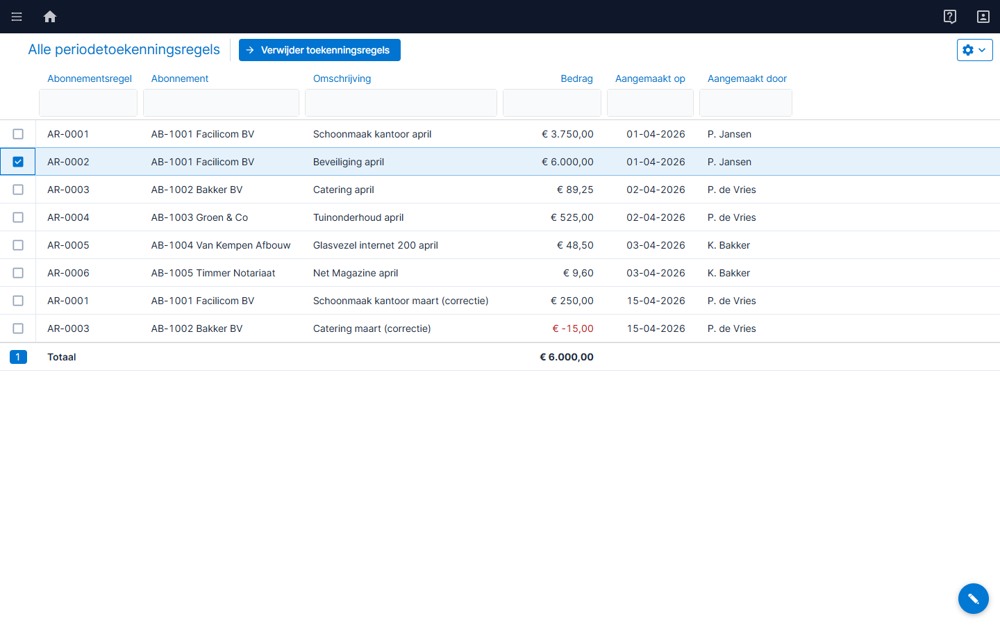
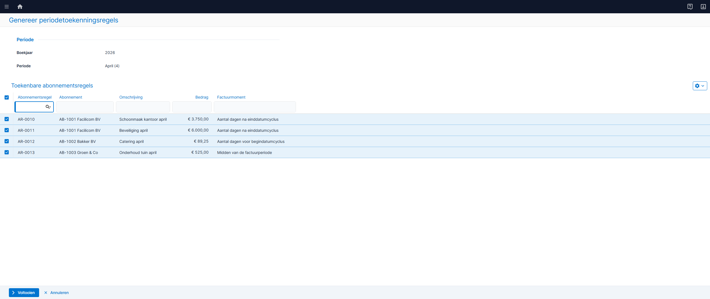
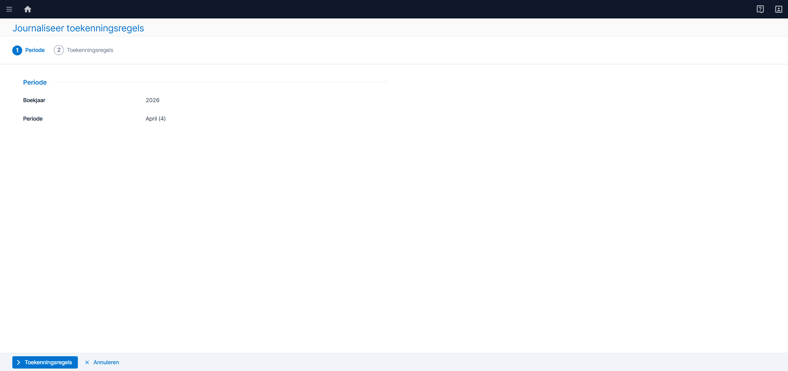
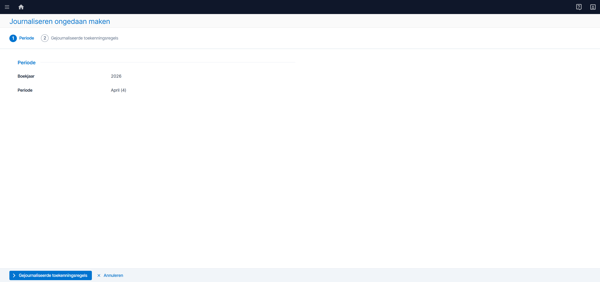
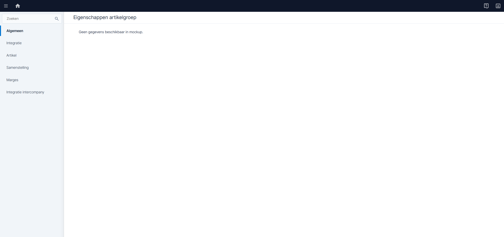
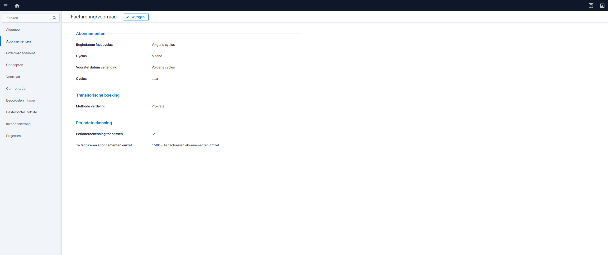
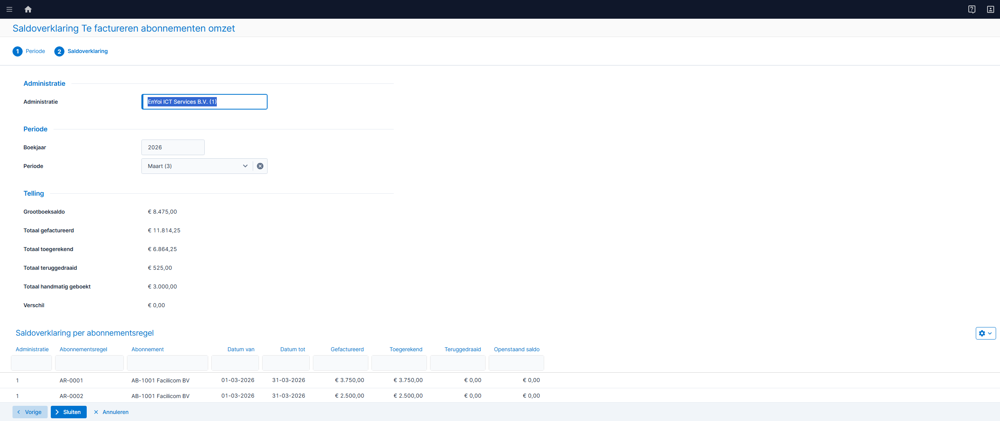

Abonnementsomzet die achteraf wordt gefactureerd, is bij periodeafsluiting nog niet geboekt. Periodetoekenning journaliseert die omzet vóór afsluiting zodat de periode gesloten kan worden.
Bij achteraf-facturatie is de factuur vaak nog niet aangemaakt als de periode wordt afgesloten.
De periode kan niet worden gesloten als er nog ongejournaliseerde abonnementsomzet is. Dit is omzet uit abonnementen die achteraf worden gefactureerd: de factuur bestaat nog niet, dus er is ook geen journaalpost.
Er is geen functie om omzet vooraf aan een periode toe te kennen als de factuur nog niet bestaat.
De financieel medewerker moet handmatige correcties maken om de periode alsnog te sluiten.
Een abonnement heeft een cyclus (leveringsperiode). Het factuurmoment bepaalt wanneer de factuur wordt aangemaakt.
Nu wordt een abonnement alleen vooraf gefactureerd. De factuur wordt aangemaakt vóór de leveringsperiode.
| Nr | Factuurmoment | Factuurdatum | Journalisering |
|---|---|---|---|
| ① | Vooraf | Vóór begindatum cyclus | Transitorisch journaliseren |
Dit werkt goed: de factuur is altijd beschikbaar vóór de periodeafsluiting, dus transitorisch journaliseren blokkeert niet.
Het factuurmoment wordt uitgebreid naar vier waarden. Hieronder de vier waarden op een tijdlijn (voorbeeld: dagen = 10).
| Nr | Factuurmoment | Berekening | Factuurdatum | Journalisering |
|---|---|---|---|---|
| ① | Aantal dagen vóór begindatumcyclus | 1 apr − 10 dagen | 22 mrt | Transitorisch journaliseren |
| ② | Aantal dagen ná begindatumcyclus | 1 apr + 10 dagen | 11 apr | Transitorisch journaliseren |
| ③ | Aantal dagen vóór einddatumcyclus | 30 apr − 10 dagen | 20 apr | Transitorisch journaliseren |
| ④ | Aantal dagen ná einddatumcyclus | 30 apr + 10 dagen | 10 mei | Periodetoekenning |
Alleen bij factuurmoment ④ (ná einddatumcyclus) is periodetoekenning nodig, want de factuur komt pas beschikbaar nadat de cyclus voorbij is.
Een nieuw tabblad op het Periodeafsluitingsplan met drie duidelijke acties.
Maakt regels aan per abonnementsregel. Er wordt nog niet geboekt. Herhaald uitvoeren maakt geen dubbele regels.
Boekt journaalposten (Te factureren omzet → Omzet) en zet de status naar Gejournaliseerd.
Maakt een tegenboeking aan. Het originele record blijft bewaard voor de audit trail.
Periodetoekenning geeft meer controle met minder handmatig werk.
Niet alle artikelgroepen hoeven tegelijk over. De klant bepaalt zelf per groep of periodetoekenning wordt toegepast.
Bij beëindigen of verwijderen van een abonnementsregel draait het systeem toekomstige toekenningen automatisch terug.
Bij bedragwijzigingen na eerdere journalisering wordt alleen het verschilbedrag verwerkt. Eerder gejournaliseerde regels blijven intact.
Tegenboekingen worden nooit verwijderd. Vijf redencodes maken correcties herleidbaar.
Via een startperiode blijft transitorisch journaliseren actief voor eerdere perioden. Geen conversie nodig.
Een nieuw overzicht toont per abonnementsregel: gefactureerd, toegerekend, teruggedraaid en openstaand saldo.
Periodetoekenning richt zich op achteraf-abonnementen en het Periodeafsluitingsplan.
Zeven schermen zijn gebouwd als interactieve Podium-JS mockups.
Het Periodeafsluitingsplan met het nieuwe tabblad Periodetoekenningsregels in de sidebar.

Embedded ListPage met kolommen en de Genereer-actie in de toolbar.

Na rijselectie zijn alle drie acties zichtbaar: Genereer, Journaliseer en Journaliseren ongedaan maken.

Toegankelijk via Abonnementen → Facturering. Alleen Journaliseren ongedaan maken beschikbaar.

Stap 1 toont de periode (alleen-lezen) met optie Direct journaliseren.

Toont een preview van te journaliseren regels.

Selecteer regels om terug te draaien.

Nieuwe velden op tabblad Integratie: Periodetoekenning toepassen, Startperiode en Te factureren abonnementen omzet.

Instellingen voor periodetoekenning op het factureringsplan.

Overzicht met kolommen: Gefactureerd, Toegerekend, Teruggedraaid en Openstaand saldo.

Lees het ontwerp voor alle user stories, bedrijfsregels en testscenarios.
Bekijk het ontwerp →